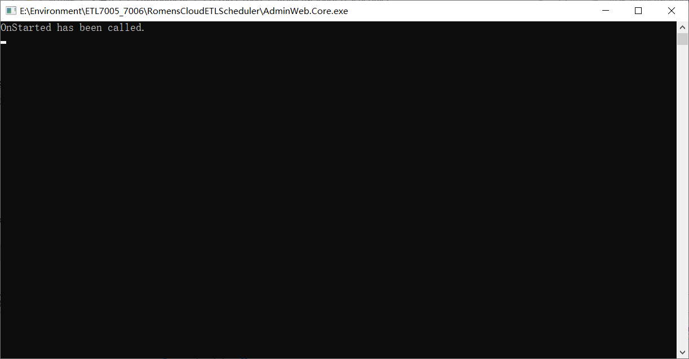
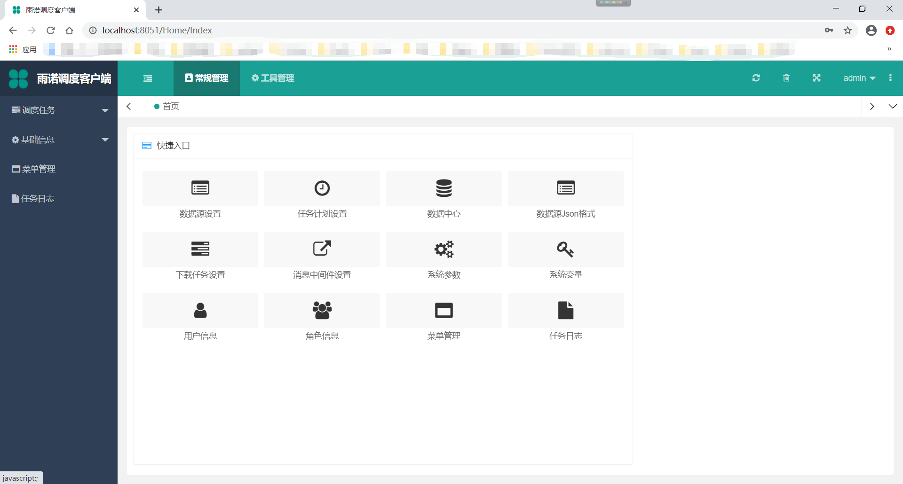

调度平台启动¶
Windows环境下启动¶
Windows Server 2008 R2 sp1以上+
第一步 安装配置环境
首先，需要先安装netcore的环境， 下载并安装 netcore3.1的SDK .
第二步 两种方法启动
（1）直接启动 exe
双击点击目录下的 AdminWeb.Core.exe ，可以看到如下界面：
默认端口8051，可以查看 appsettings.json 文件中的 urls 键对应的端口，端口占用的情况下，修改该文件的 urls 的端口，重新启动即可
（2）通过 dotnet 命令启动
dotnet AdminWeb.Core.dll --urls http://*:7050
如上图， dotnet 启动的端口号为7050，访问地址为 http://localhost:7050
Linux环境下启动¶
（1）通过 dotnet 命令直接启动
-- 添加微软仓库（以CentOS 7为例，具体看官方文档查看官方文档：https://docs.microsoft.com/zh-cn/dotnet/core/install/linux-package-manager-centos7）
sudo rpm -Uvh https://packages.microsoft.com/config/centos/7/packages-microsoft-prod.rpm
--安装dotnet的SDK sudo yum install dotnet-sdk-3.1
sudo yum install dotnet-sdk-3.1
--启动
dotnet AdminWeb.Core.dll --urls http://*:7050
（2）通过 docker 启动
-- 该镜像地址为公司内部地址
docker run -d -it --restart always -p 8051:80 --name appscheduler registry.cn-qingdao.aliyuncs.com/newerp/appscheduler:v1.3.1
注意： 正式环境使用 docker 启动时，需要将 schedulerdata.dat 通过数据卷开放出来
网站登录¶
打开浏览器
尽量通过使用 谷歌内核的浏览器 打开 http://localhost:port （端口号为启动使用的端口号）
登录
目前登录需要使用申请的账号密码登录
开发账号：18447074208
开发密码：123456
登录后，如图所示：
